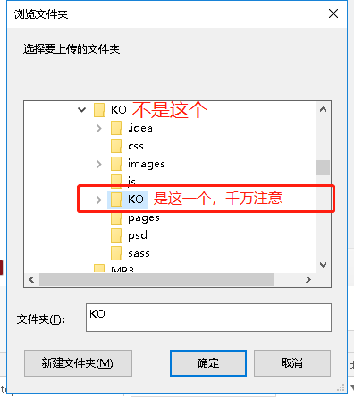

快速开发，深度定制！
KO框架帮你快速完成小程序及移动端的布局和样式编写，节省时间，专注逻辑开发!
前往下载当前版本： v3.3.7 | 文档更新于：2019-04-25
Tip：移动端需要更改单位rpx，所以使用在移动端时本框架仅可参考思路。
第1种：先从GitHub下载项目，并把程序跑在微信小程序开发工具中。 然后对照本网站页面代号，复制相应代码到另一个小程序中。
（推荐上面这种方式，因为现在整个程序已大于2M，微信规定小程序全部代码不得大于2M）
第2种：把程序当做一个自定义组件引入小程序中，利用小程序的自定义组件使用这些代码和样式
（强烈不推荐第2种方式，因为现在整个程序已大于2M，微信规定小程序全部代码不得大于2M）
第1种方式：

没有的小伙伴可以到 这里下载
1,引入KO组件
2,在页面找到需要的组件和编号
3,在小程序全局搜索代号
4，搜索到后可直接使用